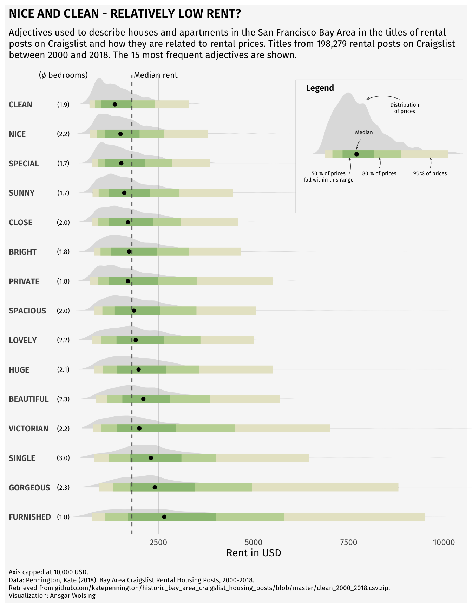

Related chart types

Violin

Density

Histogram

Boxplot

Ridgeline
A
ridgeline plot
is a type of chart that displays the
distribution of a numeric variable for several
groups. This type of chart can gives us
lot of information in a single graph!
This
post explains how to create a ridgeline plot with an
inside plot for the legend and
annotations in R with
ggplot2.
This page showcases the work of Ansgar Wolsing for the TidyTuesday challenge. Thanks to him for accepting sharing his work here!
The charts is representing a ridgeline plot with an inside plot for the legend and annotations. The data are about the rent prices in San Francisco and the keywords they are related to.
First, we need to load a few packages that will be used to create the chart.
Remember that you can install those packages by running
install.packages("package_name") in your R console.
For this post, we need 3 datasets: rent,
rent_title_words and df_plot.
The df_plot is actually the main one,
and others are used for annotations purposes.
rent = read_csv("DATA/rent.csv")
rent_title_words = read_csv("DATA/rent_title_words.csv")
df_plot = read_csv("DATA/df_plot.csv")
# sort dataframe by mean_price
df_plot <- df_plot %>% arrange(desc(mean_price))
df_plot$word <- factor(df_plot$word, levels = unique(df_plot$word))p)
stat_halfeye() is used for density plots and
stat_summary() for showing medians
annotate() adds static text annotationsscale_() functions customize scales and colors,
including a manual color scale using
MetBrewer::met.brewer()
coord_flip() flips the axes to change the plot
orientation
p_legend)
rent_title_words)
filtered for the word beautiful
geom_curve to draw arrows pointing to
specific elements
inset_element function combines the main plot
(p) and the legend (p_legend) by
embedding the legend within the main plot’s space
mean_price <- mean(rent$price, na.rm = TRUE)
median_price <- median(rent$price, na.rm = TRUE)
n_rental_posts <- nrow(subset(rent, !is.na(title)))
bg_color <- "grey97"
font_family <- "Fira Sans"
plot_subtitle = glue("Adjectives used to describe houses and apartments
in the San Francisco Bay Area in the titles of rental posts on Craigslist and
how they are related to rental prices. Titles from
{scales::number(n_rental_posts, big.mark = ',')} rental posts on Craigslist
between 2000 and 2018.
The 15 most frequent adjectives are shown.
")
p <- df_plot %>%
ggplot(aes(word, price)) +
stat_halfeye(fill_type = "segments", alpha = 0.3) +
stat_interval() +
stat_summary(geom = "point", fun = median) +
annotate("text", x = 16, y = 0, label = "(\U00F8 bedrooms)",
family = "Fira Sans", size = 3, hjust = 0.5) +
stat_summary(
aes(y = beds),
geom = "text",
fun.data = function(x) {
data.frame(
y = 0,
label = sprintf("(%s)", scales::number(mean(ifelse(x > 0, x, NA), na.rm = TRUE), accuracy = 0.1)))},
family = font_family, size = 2.5
) +
geom_hline(yintercept = median_price, col = "grey30", lty = "dashed") +
annotate("text", x = 16, y = median_price + 50, label = "Median rent",
family = "Fira Sans", size = 3, hjust = 0) +
scale_x_discrete(labels = toupper) +
scale_y_continuous(breaks = seq(2500, 20000, 2500)) +
scale_color_manual(values = MetBrewer::met.brewer("VanGogh3")) +
coord_flip(ylim = c(0, 10000), clip = "off") +
guides(col = "none") +
labs(
title = toupper("Nice and Clean - Relatively Low Rent?"),
subtitle = plot_subtitle,
caption = "Axis capped at 10,000 USD.<br>
Data: Pennington, Kate (2018).
Bay Area Craigslist Rental Housing Posts, 2000-2018.<br>
Retrieved from github.com/katepennington/historic_bay_area_craigslist_housing_posts/blob/master/clean_2000_2018.csv.zip.
<br>
Visualization: Ansgar Wolsing",
x = NULL,
y = "Rent in USD"
) +
theme_minimal(base_family = font_family) +
theme(
plot.background = element_rect(color = NA, fill = bg_color),
panel.grid = element_blank(),
panel.grid.major.x = element_line(linewidth = 0.1, color = "grey75"),
plot.title = element_text(family = "Fira Sans SemiBold"),
plot.title.position = "plot",
plot.subtitle = element_textbox_simple(
margin = margin(t = 4, b = 16), size = 10),
plot.caption = element_textbox_simple(
margin = margin(t = 12), size = 7
),
plot.caption.position = "plot",
axis.text.y = element_text(hjust = 0, margin = margin(r = -10), family = "Fira Sans SemiBold"),
plot.margin = margin(4, 4, 4, 4)
)
# create the dataframe for the legend (inside plot)
df_for_legend <- rent_title_words %>%
filter(word == "beautiful")
p_legend <- df_for_legend %>%
ggplot(aes(word, price)) +
stat_halfeye(fill_type = "segments", alpha = 0.3) +
stat_interval() +
stat_summary(geom = "point", fun = median) +
annotate(
"richtext",
x = c(0.8, 0.8, 0.8, 1.4, 1.8),
y = c(1000, 5000, 3000, 2400, 4000),
label = c("50 % of prices<br>fall within this range", "95 % of prices",
"80 % of prices", "Median", "Distribution<br>of prices"),
fill = NA, label.size = 0, family = font_family, size = 2, vjust = 1,
) +
geom_curve(
data = data.frame(
x = c(0.7, 0.80, 0.80, 1.225, 1.8),
xend = c(0.95, 0.95, 0.95, 1.075, 1.8),
y = c(1800, 5000, 3000, 2300, 3800),
yend = c(1800, 5000, 3000, 2100, 2500)),
aes(x = x, xend = xend, y = y, yend = yend),
stat = "unique", curvature = 0.2, size = 0.2, color = "grey12",
arrow = arrow(angle = 20, length = unit(1, "mm"))
) +
scale_color_manual(values = MetBrewer::met.brewer("VanGogh3")) +
coord_flip(xlim = c(0.75, 1.3), ylim = c(0, 6000), expand = TRUE) +
guides(color = "none") +
labs(title = "Legend") +
theme_void(base_family = font_family) +
theme(plot.title = element_text(family = "Fira Sans SemiBold", size = 9,
hjust = 0.075),
plot.background = element_rect(color = "grey30", size = 0.2, fill = bg_color))
# Insert the custom legend into the plot
p + inset_element(p_legend, l = 0.6, r = 1.0, t = 0.99, b = 0.7, clip = FALSE)
This post explains how to create a ridgeline plot with an inside plot for the legend and annotations in R with ggplot2.
You might be interested by the ggridges package, that is not used here but that can be very useful for this kind of chart, and the ggstatsplot package that can help you to annotate your chart while plotting distributions.
Related chart types